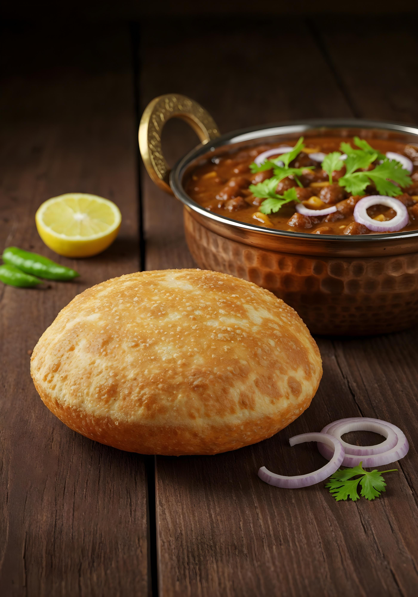

Home
Bhatura

It is classic Indian puffed bread which is always associated and remembered with inseparable Chole Bhature. This authentic deep fried Indian bread is made with fermented dough. This unique sub ingredient gives it a taste and texture which no other cooking process can provide and this sets it apart from other similar Indian deep-fried breads. Make this bhatura at home by following our step by step recipe and serve with punjabi chole and onion salad in lunch or dinner.
Ingredients
- 2 cups All Purpose Flour, or Maida
- 1 tablespoon Semolina (Rava/Sooji)
- 2 tablespoons Cooking Oil
- 4 tablespoons Yogurt or Curd
- 1 teaspoon Sugar
- 1/4 teaspoon Baking Powder
- Cooking Oil (for deep frying)
- Salt
- Water
Steps
- Sieve all purpose flour and semolina in a large wide mouthed bowl. Add sugar, salt, yogurt, baking powder and 2 tablespoons cooking oil and mix well.
- Slowly add water in small incremental quantities and knead smooth and soft dough.
- Cover it with a wet muslin cloth and place it in a warm place for about 3-4 hours. After few hours, you will notice its increased size. Again, knead it until smooth.
- Divide dough into 12 equal sized portions and give them a shape of ball.
- Take one ball, press it and roll out in a circular shape like puri of around 5-6 inch diameter. Keep it little thick than regular puri. (If required, grease ball with oil or coat it with dry flour to prevent it from sticking on a rolling board.) Repeat the process for remaining balls and roll out bhaturas.
- Heat oil in a deep frying pan (kadai) over medium heat. To check whether oil is hot enough for deep-frying or not, drop a small piece of dough in it and if it comes to the surface immediately without changing its color, then oil is sufficiently hot. Now place one rolled out raw bhatura in it. After 5-7 seconds, gently press it in the center with a perforated spoon to puff up.
- When bottom side is light golden brown, turn it gently and deep-fry another side until light golden brown. Make sure that you are deep frying on medium heat. When ready, take it out from oil with the help of perforated spoon and drain excess oil.
- Transfer it to a plate. Fry remaining bhaturas in same way. Serve with chole masala.